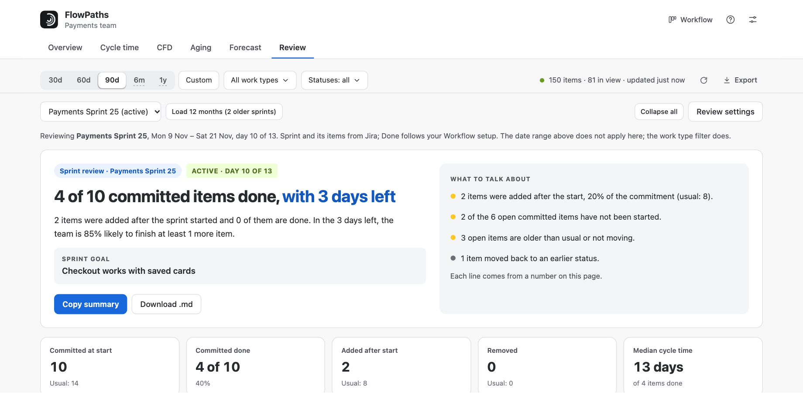
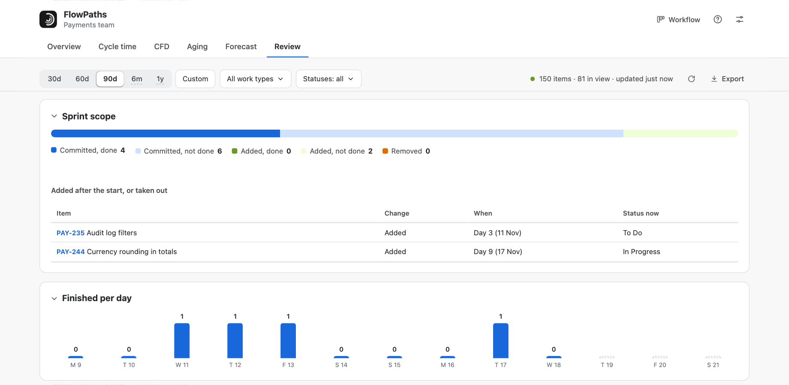
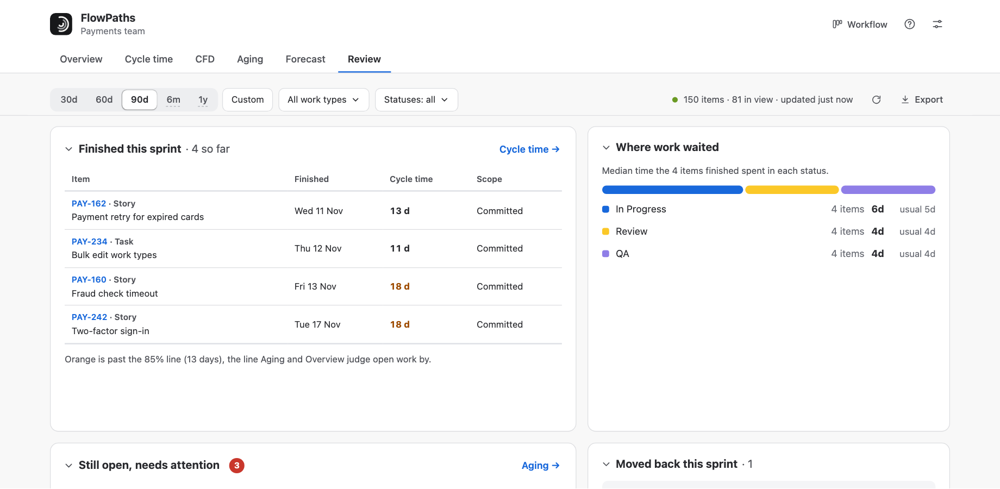
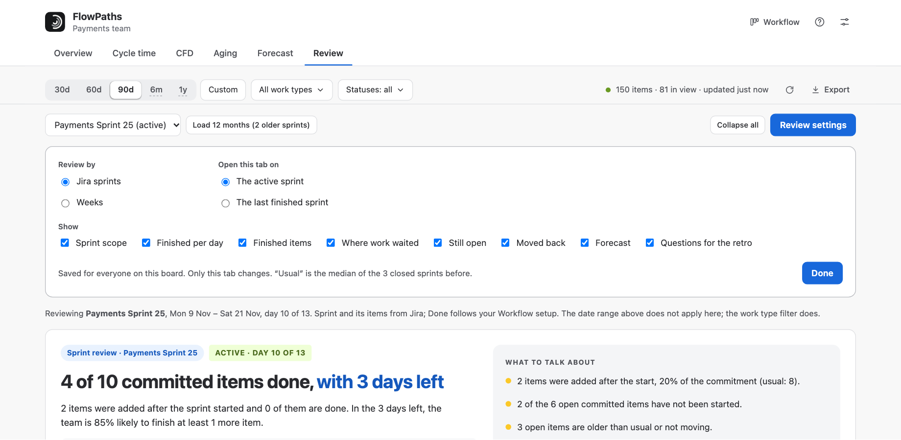

Review
Your sprint review, prepared from your real Jira sprints.
The Review tab takes one sprint, or one week, and lays out what the team committed to, what changed along the way, what got done and what is worth talking about. It uses your board’s actual Jira sprints and every item’s history, so there is nothing to set up and nothing to estimate. Bring it to the sprint review or the retro, or paste its summary into Confluence or Slack.

Choosing what to review
- The tab opens on the active sprint, or on the last closed one if you prefer (see Review settings). Pick any other sprint from the list at the top.
- Only sprints that started inside the loaded history can be reviewed, so every item that was in them is counted. FlowPaths loads 90 days at first; Load 12 months brings older sprints into the list.
- When a board has sprints of its own, only those are listed. Sprints another team’s board pulled in are theirs to review.
- Boards without sprints get a weekly review instead.
- The work type filter applies here. The date range does not: the sprint or week sets the dates.
Committed, added, removed and done
Jira records every time an item is put into or taken out of a sprint. FlowPaths replays that history, so each number reflects what really happened, not just where items sit today:
- Committed — in the sprint at the moment it started.
- Added — put into the sprint after it started, including items created straight into it.
- Removed — in the sprint after it started, but not when it ended.
- Done — still in the sprint at the end, and finished by then. “Finished” follows your Workflow setup, the same as every other tab.
For a closed sprint, “the end” is the moment it was completed in Jira; for the active sprint, it is now. When Jira moves unfinished work into the next sprint on completion, those items count as not done, not as removed.
The summary
- The headline says how much of the commitment is done, with the days left (or, for a closed sprint, the share of the commitment completed).
- One sentence covers what was added and how much of it is done, what was removed, and what the team is 85% likely to finish in the days left.
- The sprint goal from Jira, when the sprint has one.
- What to talk about — up to four points, the ones needing attention first. Each comes from a number on the page: scope added after the start, committed items not started yet, a status where work waited longer than usual, items older than usual, carried-over work.
Copy summary and Download .md
Copy summary and Download .md give you the whole review as Markdown: the headline, the numbers, the talking points, what was added or removed, what finished, what is still open, what moved back and the retro questions. Every issue is a link to it in Jira. Paste it into a Confluence page, a Slack thread or a ticket. If Jira blocks copying to the clipboard in your browser, use Download .md instead.
Compared with the usual
Each number shows the team’s usual: the median of the 3 closed sprints before the one you are looking at (or the 3 weeks before, in a weekly review). The median keeps one unusual sprint from moving the bar. An active sprint is never part of the usual, because it isn’t finished.
Sprint scope and finished per day

Finished per day runs over the sprint’s own dates, with the days still to come shown dashed. It only runs past the end date when the sprint did.
The details

- Finished — each item with its finish date, cycle time and whether it was committed or added. Cycle times past the 85% line are orange, the same line Aging uses.
- Where work waited — the median time the finished items spent in each Doing status, against the usual, with a note on the biggest change.
- Still open, needs attention — open items in the sprint past the 85% line (orange) or 95% line (red), or with no change for 5 days or more, with their time in the current status and how often they moved back. For a closed sprint, this becomes Not finished when the sprint closed.
- Moved back — backward moves during the sprint, grouped by move (for example Review → In Progress), with moves out of Done labelled as reopened. “Backward” follows the order in your Workflow setup.
- By the end of the sprint — what the team is 85% likely to finish in the days left, from the same Monte Carlo simulation as the Forecast tab. Use the Forecast tab to plan the next sprints, including time off and capacity changes.
- Questions for the retro — a few open questions drawn from the numbers, to start the conversation.
Every issue key opens the item in Jira. Each box’s heading collapses it; Collapse all closes them all. What you collapse is remembered in your own browser.
Weekly review
Boards without sprints, or teams that choose Weeks in the settings, review one week at a time: what finished, what started, the median cycle time and the open work that needs attention, each against the usual of the 3 weeks before. The current week is reviewed as it stands; earlier weeks can be picked from the list.
Review settings

- Review by — Jira sprints or weeks.
- Open this tab on — the active sprint (or current week), or the last finished one.
- Week starts on — Monday, Sunday or Saturday. Shown only for weekly reviews, since sprints use their own dates from Jira.
- Show — hide the sections your team doesn’t use.
Settings are saved for everyone on the board and change only the Review tab.
How it differs from Jira’s Sprint Report
- Done follows your Workflow setup; Jira’s report uses the board’s last column. On a typical board they agree.
- An item taken out of the sprint and out of the board’s filter is no longer loaded, so it isn’t counted as removed.
- FlowPaths adds what the Sprint Report doesn’t: the usual, where work waited, aging and rework, and a forecast for the days left.
How to use it
- Sprint review: open the active sprint on its last day and walk through the headline and What to talk about.
- Retro: open the closed sprint, then use Where work waited, Moved back and the retro questions to find one thing to change.
- Mid-sprint check: Still open, needs attention shows what to pull to done before starting anything new.
- Planning: go from “By the end of the sprint” to the Forecast tab to size the next sprint from real throughput.